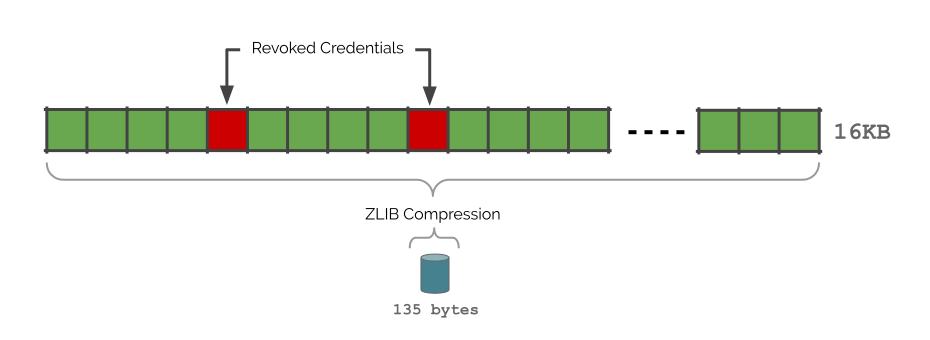
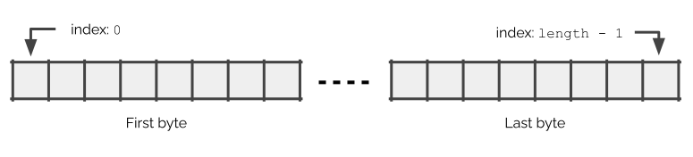

This specification describes a privacy-preserving, space-efficient, and
high-performance mechanism for publishing status information such as
suspension or revocation of Verifiable Credentials through use of bitstrings.
Status of This Document
This section describes the status of this
document at the time of its publication. A list of current W3C
publications and the latest revision of this technical report can be found
in the W3C technical reports index at
https://www.w3.org/TR/.
Publication as a Proposed Recommendation does not
imply endorsement by W3C and its Members.
This is a draft document and may be updated, replaced or obsoleted by other
documents at any time. It is inappropriate to cite this document as other
than work in progress.
The W3C Membership and other interested parties are invited to review
the document and send comments through 17 April 2025.
Advisory Committee Representatives should consult their
WBS questionnaires. Note that substantive technical comments were expected during the
Candidate Recommendation review period that ended
21 June 2024.
This document was produced by a group
operating under the
W3C Patent
Policy.
W3C maintains a
public list of any patent disclosures
made in connection with the deliverables of
the group; that page also includes
instructions for disclosing a patent. An individual who has actual
knowledge of a patent which the individual believes contains
Essential Claim(s)
must disclose the information in accordance with
section 6 of the W3C Patent Policy.
It is often useful for an issuer of verifiable credentials
[VC-DATA-MODEL-2.0] to link to a location where a verifier can check to see
if a credential has been suspended or revoked. There are a variety of privacy
and performance considerations that are made when designing, publishing, and
processing status lists.
One such privacy consideration happens when there is a one-to-one mapping
between a verifiable credential and a URL where the status is
published. This type of mapping enables the website that publishes the URL to
correlate the holder, time, and verifier when the status is
checked. This could enable the issuer to discover the type of interaction
the holder is having with the verifier, such as providing an age
verification credential when entering a bar. Being tracked by the issuer
of a driver's license when entering an establishment violates a privacy
expectation that many people have today.
Similarly, there are performance considerations that are explored when designing
status lists. One such consideration is where the list is published and the
burden it places from a bandwidth and processing perspective, both on the server
and the client fetching the information. In order to meet privacy expectations,
it is useful to bundle the status of large sets of credentials into a single
list to help with group privacy. However, doing so can place an impossible
burden on both the server and client if the status information is as much as a
few hundred bytes in size per credential across a population of
hundreds of millions of holders.
The rest of this document proposes a highly compressible, bitstring-based
status list mechanism with strong privacy-preserving characteristics,
that is compatible with the architecture of the Web, is highly space-efficient,
and lends itself well to content distribution networks. As an example of
using this specification to achieve a number of beneficial privacy and
performance goals, it is possible to create a status list that can be
constructed for 100,000 verifiable credentials that is roughly
12,500 bytes in size in the worst case. In a case where a few hundred
credentials have been revoked, the size of the list is less than a
few hundred bytes while providing privacy in a group of 100,000 individuals.
1.1 Conceptual Framework
This section is non-normative.
This section outlines the core concept utilized by the status list
mechanism described in this specification. At the most basic level, status
information for all verifiable credentials issued by an issuer
is expressed as items in a list. Each issuer manages a list
of all verifiable credentials that it has issued. Each
verifiable credential is associated with an item in its list.
When a single bit specifies a status, such as "revoked" or "suspended",
then that status is expected to be true when the bit is set (1) and
false when unset (0).
One of the benefits of using a bitstring is that it is a highly compressible
data format since, in the average case, large numbers of credentials will
remain unrevoked. This will ensure long sections of bits that are the same
value and thus highly compressible using run-length compression techniques
such as GZIP [RFC1952]. The default status list size is 131,072 entries,
equivalent to 16 KB of single bit values. When only a handful of
verifiable credentials are revoked, GZIP compresses the bitstring
to a few hundred bytes.
Another benefit of using a bitstring is that it enables large numbers of
verifiable credential statuses to be placed in the same list.
This specification uses a minimum list length of 131,072. This
size ensures an adequate amount of group privacy in the average case.
If better group privacy is required, the bitstring can be made larger.

Figure 1
A visual depiction of the concepts outlined in this section.
Note: Status information is about the verifiable credential
The status information associated with a particular verifiable credential
is about the verifiable credential itself and might not apply to any
underlying or backing credential, such as an educational degree. For
example, in the case of such an educational degree, it is possible for a
verifiable credential to be revoked because the mechanism used to
create its digital signature has been compromised, while the backing educational
degree remains valid.
As well as sections marked as non-normative, all authoring guidelines, diagrams, examples, and notes in this specification are non-normative. Everything else in this specification is normative.
The key words MAY, MUST, MUST NOT, OPTIONAL, and SHOULD in this document
are to be interpreted as described in
BCP 14
[RFC2119] [RFC8174]
when, and only when, they appear in all capitals, as shown here.
A conforming document is any concrete expression of the
data model that follows the relevant normative requirements in Section
2. Data Model.
A conforming processor is any algorithm realized
as software and/or hardware that generates and/or consumes a
conforming document according to the relevant normative statements in
Section 3. Algorithms. Conforming processors MAY choose to only
support bitstring entry sizes of 1. Conforming processors MUST produce errors
when non-conforming documents are consumed.
2. Data Model
There are numerous ways to express status information associated with digital
credentials. Some of these mechanisms include Certificate Revocation Lists (CRL)
[RFC5280], the Online Certificate Status Protocol (OCSP) [RFC2560], Bloom
Filters [RFC8932], and cryptographic accumulators [ALLOSAUR]. This
specification optimizes for a variety of requirements that are different from
other mechanisms. These requirements include:
Technology
CRL
OCSP
Bloom
Accumulator
Bitstring
Provides tunable group privacy
✓
✗
✓
✓
✓
Does not require signed assertion for each credential
When an issuer desires to enable status information for a
verifiable credential, they MAY add a credentialStatus
property that uses the data model described in this section. Any
expression of the data model in this section MUST be expressed in a
conforming verifiable credential as defined in [VC-DATA-MODEL-2.0].
Property
Description
id
An optional identifier for the status list entry. The constraints on the id
property are listed in the Verifiable Credentials Data Model specification
[VC-DATA-MODEL-2.0]. If present, the value is expected to be a URL that
identifies the status information associated with the verifiable
credential. It MUST NOT be the URL for the status list. The value is not
used during the verification or validation process, and does not need to be
related to the statusListCredential value. If necessary, the value can be used
to uniquely identify the BitstringStatusListEntry object, such as when it is
stored in a database.
type
The type property MUST be BitstringStatusListEntry.
statusPurpose
The purpose of the status entry MUST be a string. While the value of the
string is arbitrary, the following values MUST be used for their intended
purpose:
Used to cancel the validity of a verifiable credential. This status is
not reversible.
suspension
Used to temporarily prevent the acceptance of a verifiable credential.
This status is reversible.
statusListIndex
The statusListIndex property MUST be an arbitrary size integer
greater than or equal to 0, expressed as a string in base 10. The value identifies the
position of the status of the verifiable credential. Implementations
SHOULD assign indexes randomly, such that inferences — such as the recency
of the assignment or the size of the group — cannot be easily drawn from
that position.
statusListCredential
The statusListCredential property MUST be a URL to a
verifiable credential. When the URL is dereferenced, the resulting
verifiable credentialMUST have type property that
includes the BitstringStatusListCredential value.
Status list entries can be used to express the purpose of a
status associated with a verifiable credential by using the
statusPurpose property.
The use of revocation or suspension as the status purpose
includes the semantics of the status, with revocation
indicating that a status bit expresses whether a
verifiable credential has been revoked and suspension
indicating that a status bit expresses whether a
verifiable credential has been suspended. The example below
demonstrates the use of these status purposes:
Example 1: Example StatusListCredential using simple entries
It is important to note that statusListIndex is the only link between
the verifiable credential and its status in the list. Other
properties such as credentialSubject.id are not used for
this purpose.
2.2 BitstringStatusListCredential
When a status list verifiable credential is published, it MUST be a
conforming document, as defined in [VC-DATA-MODEL-2.0], that expresses the
data model in this section. The following section describes the format of
the verifiable credential that encapsulates the status list.
The status list is expressed inside a verifiable credential in order to
enable a holder to provide it directly to a verifier. This mechanism,
sometimes called "certificate stapling", increases privacy for the holder by
ensuring that the verifier does not need to contact the issuer to
retrieve the status list. Still, a verifier might choose to ignore the
holder-provided status list, even when its authenticity is verifiable,
if it desires a more recent version of a status list, for instance.
Issuers and verifiers are advised that the issuer of a
verifiable credential and the issuer of an associated
BitstringStatusListCredential might not be the same. There are technical,
legal, institutional, political, and other reasons that might make it
appropriate to separate the authority over the original credential from the
authority to revoke, or otherwise change the status of, such a credential.
Therefore, the issuer value of a verifiable credential containing a
BitstringStatusListEntryMAY be different from the issuer value of a
BitstringStatusListCredential.
Property
Description
id
The verifiable credential that contains the status list MAY
express an id property that matches the value specified in
statusListCredential for the corresponding
BitstringStatusListEntry (see 2.1 BitstringStatusListEntry).
type
The verifiable credential that contains the status list MUST
express a type property that includes the
BitstringStatusListCredential value.
validFrom
The earliest point in time at which the status list is valid. This property is
defined in the Verifiable Credentials Data Model specification in
Section 4.6: Validity Period.
validUntil
The latest point in time at which the status list is valid. This property is
defined in the Verifiable Credentials Data Model specification in
Section 4.6: Validity Period.
credentialSubject.type
The type of the credential subject, which is the
status list, MUST be BitstringStatusList.
credentialSubject.statusPurpose
The value of the purpose property of the status entry, statusPurpose, MUST be
one or more strings. While the value of each string is arbitrary, the following
values MUST be used for their intended purpose:
Used to cancel the validity of a verifiable credential. This status is
not reversible.
suspension
Used to temporarily prevent the acceptance of a verifiable credential.
This status is reversible.
credentialSubject.encodedList
The encodedList property of the credential subjectMUST be a
Multibase-encoded base64url (with
no padding) [RFC4648] representation of the GZIP-compressed [RFC1952]
bitstring values for the associated range of verifiable credential
status values. The uncompressed bitstring MUST be at least 16KB in size. The
bitstring MUST be encoded such that the first index, with a value of zero (0),
is located at the left-most bit in the bitstring and the last index, with a
value of one less than the length of the bitstring (bitstring_length - 1), is
located at the right-most bit in the bitstring. Further information on bitstring
encoding can be found in Section 7.1 Bitstring Encoding.
credentialSubject.ttl
The ttl is an OPTIONAL property that indicates the "time to live" in
milliseconds before a refresh SHOULD be attempted. If not present, no default
value is assumed. The value does not override or replace the
validity period
of the BitstringStatusList. Implementations that publish the status list
SHOULD align any protocol-specific caching information, such as the HTTP
Cache-Control header, with the value in this field.
The example below demonstrates how the BitstringStatusListEntry is used
with a BitstringStatusListCredential to provide the verifier with
the information necessary to determine the status of a particular
verifiable credential.
The following section outlines the algorithms that are used to generate
and validate status lists as described by this document.
If an implementation of any of the algorithms in this section processes a property
defined in Section 2. Data Model whose value is malformed due to
not complying with associated "MUST" statements, a
MALFORMED_VALUE_ERRORMUST be raised.
3.1 Generate Algorithm
The following process, or one generating the exact output, MUST be followed
when producing a
BitstringStatusListCredential.
The algorithm takes a list of issued credentials as input and either throws
an error or returns a status list credential as output.
Generate a proof for the statusListCredential and publish it to the
endpoint listed in the verifiable credential.
IssuersSHOULD publish status list credentials in a way that can be cached
and that does not track who retrieves the status list credential, such as
through Oblivious HTTP, a content distribution network that is not operated by
the issuer, or business processes for which the access logs are not
accessible by data analysts or systems administrators.
3.2 Validate Algorithm
The following process, or one generating the exact output, MUST be followed
when validating a verifiable credential that is contained in a
BitstringStatusListCredential.
The algorithm takes a status list verifiable credential as input
and either throws an error or returns a status list credential as output.
Let minimumNumberOfEntries be 131,072 unless a different lower bound is
established by a specific ecosystem specification.
Let status purpose be the value of statusPurpose
in the credentialStatus entry in the
credentialToValidate.
Dereference the statusListCredential URL, and ensure that all
proofs verify successfully. If the dereference fails, raise a
STATUS_RETRIEVAL_ERROR. If any of the
proof verifications fail, raise a
STATUS_VERIFICATION_ERROR.
Verify that the status purpose is equal to a statusPurpose value in the
statusListCredential. Note: The statusListCredential might contain multiple
status purposes in a single list. If the values are not
equal, raise a
STATUS_VERIFICATION_ERROR.
If the length of the revocation bitstring is less than
minimumNumberOfEntries, raise a
STATUS_LIST_LENGTH_ERROR.
Let status be the value in the bitstring at the position indicated
by the credentialIndex multiplied by the size. If the credentialIndex
multiplied by the size is a value outside of the range of the bitstring, a
RANGE_ERRORMUST be
raised.
Set the status key in result to status, and set the purpose key in
result to the value of statusPurpose.
If status is 0, set the valid key in result to true; otherwise, set it
to false.
Return result.
When a statusListCredential URL is dereferenced, server implementations MAY
provide a mechanism to dereference the status list as of a particular point in
time. When an issuer provides such a mechanism, it enables a
verifier to determine changes in status to a precision chosen by the
issuer, such as hourly, daily, or weekly. If such a feature is supported, and if
query parameters are supported by the URL scheme, then the name of the query
parameter MUST be timestamp and the value MUST be a valid URL-encoded
[XMLSCHEMA11-2] dateTimeStamp string value. The result of dereferencing such a
timestamp-parameterized URL MUST be either a status list credential containing
the status list as it existed at the given point in time, or a
STATUS_RETRIEVAL_ERROR. If the result is
an error, implementations MAY attempt the retrieval again with a different
timestamp value, or without a timestamp value, as long as the verifier's
validation rules permit such an action.
VerifiersSHOULD cache the retrieved status list and SHOULD use proxies
or other mechanisms, such as Oblivious HTTP, that hide retrieval behavior from
the issuer.
Note: Issuer validation is use case dependent
It is expected that a verifier will ensure that it trusts the issuer
of a verifiable credential, as well as the issuer of the associated
BitstringStatusListCredential,
before using the information contained in either credential for further
decision making purposes. Implementers are advised that the issuers of these
credential might differ, such as when the original issuer of the
verifiable credential does not maintain a record of its validity.
3.3 Bitstring Generation Algorithm
The following process, or one generating the exact output, MUST be followed
when generating a status list bitstring. The algorithm takes an
issuedCredentials list as input and either throws an error or returns a
compressed bitstring as output.
Let bitstring be a list of bits with a minimum size of 16KB,
where each bit is initialized to 0 (zero).
For each value in bitstring, if there is a corresponding statusListIndex
value in a credential in issuedCredentials, set the value to the appropriate
status.
Generate a compressed bitstring by using the GZIP
compression algorithm [RFC1952] on the bitstring
and then Multibase-encode the result using base64url (with no padding).
Return the compressed bitstring.
3.4 Bitstring Expansion Algorithm
The following process, or one generating the exact output, MUST be followed
when expanding a compressed status list bitstring. The algorithm takes a
compressed bitstring as input and either throws an error or returns a
uncompressed bitstring as output.
Let compressed bitstring be a compressed status list
bitstring.
Generate an uncompressed bitstring by using the
Multibase-decode algorithm on the
compressed bitstring and then expanding the output using
the GZIP decompression algorithm [RFC1952].
Return the uncompressed bitstring.
3.5 Processing Errors
The algorithms described in this specification throw specific types of errors.
Implementers might find it useful to convey these errors to other libraries or
software systems. This section provides specific URLs, descriptions, and error
codes for the errors, such that an ecosystem implementing technologies described
by this specification might interoperate more effectively when errors occur.
When exposing these errors through an HTTP interface, implementers SHOULD use
Problem Details for HTTP APIs [RFC9457] to encode the error data structure. If [RFC9457] is
used:
The type value of the error object MUST be a URL that starts with the value
https://www.w3.org/ns/credentials/status-list# and ends with the value in the
section listed below.
The title value SHOULD provide a short but specific human-readable string for
the error.
The detail value SHOULD provide a longer human-readable string for the error.
All human-readable strings SHOULD be localized as described in Section 1 of
Problem Details for HTTP APIs, using language negotiation through the Accept-Language
HTTP header field to select the most appropriate resources.
When dereferencing statusListCredential, the content of the returned
statusListCredential might be any media type registered for the purpose of
expressing a verifiable credential with one or more proofs.
For example, a verifiable credential secured with Data Integrity Proofs might
have media type application/vc, while a verifiable credential
secured with SD-JWT might have media type application/sd-jwt.
Some implementations might choose to support less specific media types such as
application/ld+json or application/json.
When dereferencing over HTTP, the use of the
accept and
content-type headers, might
allow some implementations to negotiate for the proof format used to secure the
statusListCredential.
Some implementations might use the
415 Unsupported Media Type status
code to signal that they do not support the requested media type.
5. Contexts and Vocabularies
5.1 Vocabulary
The terms defined in this specification are also part of the RDF vocabulary namespacehttps://www.w3.org/ns/credentials/status#. For any
TERM, the relevant URL is of the form https://www.w3.org/ns/credentials/status#TERM.
Implementations that use RDF processing and rely on this specification MUST use
these URLs.
When dereferencing the
https://www.w3.org/ns/credentials/status# URL, the
media type of the data that is returned depends on HTTP content negotiation.
These are as follows:
Media Type
Description and Hash
application/ld+json
The vocabulary in JSON-LD format [JSON-LD11]. SHA2-256 Digest:b9434542c4a45e5e13e23274737855715eb6a32a6d65eaecc0eeaddedfbecac3
text/turtle
The vocabulary in Turtle format [TURTLE]. SHA2-256 Digest:da5c3ef7d09d042a988e59f98e7adc403577935f91175bb0736bcff3cd26d834
text/html
The vocabulary in HTML+RDFa Format [HTML-RDFA]. SHA2-256 Digest:2272e01bd93dedb70272f071b9955fe0856b98ee408f3edcbf048f3b469873dd
It is possible to confirm the cryptographic digests above by running a command
like the following (replacing <MEDIA_TYPE> and <DOCUMENT_URL> with the
appropriate values) through a modern UNIX-like OS command line interface:
curl -sL -H "Accept: <MEDIA_TYPE>" <DOCUMENT_URL> | openssl dgst -sha256
5.2 JSON-LD context
Implementations that perform JSON-LD processing MUST treat the following JSON-LD
context URL as already resolved, where the resolved document matches the
corresponding hash value below:
It is possible to confirm the cryptographic digests listed above by running a
command like the following through a modern UNIX-like OS command line interface:
curl -sL -H "Accept: application/ld+json" https://www.w3.org/ns/credentials/status/v1 | openssl dgst -sha256
Applications or specifications may define mappings to the vocabulary URLs using
their own JSON-LD contexts. For example, the JSON-LD context definitions
referred to in this section are also a part of the
https://www.w3.org/ns/credentials/v2 context, defined by the
Verifiable Credentials Data Model v2.0 specification.
6. Privacy Considerations
This section is non-normative.
This section details the general privacy considerations and specific privacy
implications of deploying this specification into production environments.
This document specifies a minimum revocation bitstring length of 131,072, or
16KB uncompressed. This is enough to give holders an adequate amount of
group privacy if the number of verifiable credentials issued is large enough.
However, if the number of issued verifiable credentials is a small population,
the ability to correlate an individual increases because the number of allocated
slots in the bitstring is small. Correlating this information with, for example,
where the geographic request came from can also help to correlate individuals
that have received a credential from the same geographic region.
6.2 Unnecessary Correlation
This section is non-normative.
There are a number of global identifiers used in a status list entry, defined in
Section 2.1 BitstringStatusListEntry, that can be used across verifiers
to correlate subjects. Some of the properties that can
express these values are id, statusListIndex, and
statusListCredential.
In some cases, such as when presenting a verifiable credential that contains a global identifier (such as a driver's license
identification number), adding one or more global identifier(s) for status list
information does not increase correlation harm, since a single globally unique
identifier is all that is required for correlation.
When global identifiers are used in presentations that use
selective disclosure or unlinkable disclosure, they can violate privacy
expectations. Issuers are urged to enable status information to be
selectively disclosable/concealable when a particular verifiable credential
is expected to be disclosed in a way that does not need correlation, such as when
proving that an individual is above a certain age. Verifiers can require
that status information be revealed in situations that require them to know the
current status of a credential, and the holder might then consent or refuse to
reveal that information for a given transaction. In all cases, both issuers
and verifiers are urged to avoid the use of global identifiers in order to
prevent correlation, unless it is required for or by a particular exchange.
It is possible for verifiers to increase the privacy of the
holder whose verifiable credential is being checked by caching
status lists that have been fetched from remote servers. By caching the
content locally, less correlatable information can be inferred from
verifier-based access patterns on the status list.
6.4 Content Distribution Networks
This section is non-normative.
The use of content distribution networks by issuers can increase the
privacy of holders by reducing or eliminating requests for the
status lists from the issuer. Often, a request for a revocation
list will be served by an edge device and thus be faster and reduce the load
on the server as well as cloaking verifiers and holders
from issuers.
6.5 Decoy Values
This section is non-normative.
Issuer use of decoy values in status lists has been explored as a mechanism
to increase the privacy of subjects. While algorithms for employing decoy
values are out of scope for this specification, implementers are advised that
the use of decoy values can harm privacy if the decoy values do not accurately
simulate the population associated with the status list. If decoy values can
be distinguished from real values, the anonymity provided in the set will be
reduced by the number of decoy values that are detectable as such. The most
privacy-preserving status list is one that never changes, since the behavior
of the population cannot be determined if no observable events occur.
Given how difficult it is to statistically simulate status entries for
a population, and that general advice cannot be given since
verifiable credentials serve a broad set of use cases, implementers
are advised to allocate status list entry indexes randomly, and to minimize —
optimally to never — the rate at which status entries are changed. Allocation
of status list entries preserves privacy best when it does not trigger any
observable change of a status list.
6.6 Malicious Issuers and Verifiers
This section is non-normative.
In general, the group privacy protections offered by this specification can be
circumvented by malicious issuers and verifiers. Its privacy
benefits can only be realized when issuers and verifiers intend to avoid
tracking or sharing the presentation of particular credentials.
A malicious verifier might intentionally attack group privacy by sharing
information from presented credentials with a malicious issuer. This
sort of collusion is difficult to detect as it is typically performed via a
secure communication channel between the issuer and the verifier.
A malicious issuer might intentionally attack group privacy by creating a
unique status list for each issued credential, in order to establish a one-to-one
mapping to track when a verifier processes each mapped credential. Similarly,
they could establish a one-to-one mapping by using a different
cryptographic key for each issued credential that is tracked by a given status list.
This sort of collusion can be detected by holder software that serves
multiple holders (e.g., a holder app that runs on a server) if it
has, for example, an opt-in process that finds that some global identifier(s)
used within a verifiable credential are not adequately shared by other
credentials.
Holders could then be warned when presenting a verifiable credential
that contains some global identifier(s) that are unique to that credential.
Such an opt-in service could represent some additional privacy concerns;
whether this potential exposure via the holder software is justified by
the awareness of possible global identifier correlation can only be evaluated
by the users of such a system.
6.7 Monitoring Status Lists
This section is non-normative.
Once a verifier knows of a status list and entry index that is
associated with a specific holder or subject, it becomes possible for that
verifier to see updates to that status entry as long as the
status list continues to be updated. This is useful to a verifier that
needs to understand when a particular verifiable credential has changed
status without asking the issuer directly for status information on
the specific verifiable credential or when interacting with the holder to get
the latest status information is not possible. The feature can also cause a
privacy violation for the holder and/or subject if the
verifier is able to perform near-real-time checks on the status of the
verifiable credential.
Issuers can provide a level of reprieve from this privacy concern for
holders by revoking and reissuing effectively the same
verifiable credential on a relatively brief timeline.
For example, an issuer could automatically reissue a
verifiable credential every three months and assign a new status entry
index when the reissuance occurs to break any sort of long-term monitoring
of a verifiable credential as it changes status.
7. Security Considerations
This section is non-normative.
There are a number of security considerations that implementers should be
aware of when processing data described by this specification. Ignoring or
not understanding the implications of this section can result in
security vulnerabilities.
While this section attempts to highlight a broad set of security
considerations, it is not a complete list. Implementers are urged to seek the
advice of security and cryptography professionals when implementing mission
critical systems using the technology outlined in this specification.
7.1 Bitstring Encoding
This section is non-normative.
It is critical that implementers pay particular attention to the way that they
encode and decode bitstrings. Failure to do so can result in checking the
wrong bitstring index for a given credential, leading to a misinterpretation
of its present state (e.g., mistaking a revoked status for an unrevoked
status). As stated in Section 2.2 BitstringStatusListCredential,
bitstrings are encoded such that the first (zeroth) index refers to the
left-most bit of the bitstring array. The diagram below demonstrates the
proper layout for an uncompressed bitstring.

Figure 2
A visual depiction of the bitstring layout.
For example, if a bitstring is 131,072 bits in size (16KB), the first index will
be 0, and the last index will be 131,071.
7.2 Validity Periods
This section is non-normative.
The validity period that
an issuer might choose to express in a status list is dependent on a variety of
factors including:
How often do status values change? In real-time? Daily? Weekly? Monthly? Other?
Is there a period of time after which an issuer would incur reputational
damage by not notifying a verifier of a status change?
Is there any expectation that a verifier will not accept a
verifiable credential with a status list that does not expire for a
period of time it deems excessive?
Will a short validity period for a status list cause a significant network
bandwidth or computing burden for an issuer or a verifier? Might
this burden be mitigated by a longer validity period?
Since these factors vary with the ecosystem and credential type, there is no
minimum or maximum validity period that is suggested for all status lists.
Issuers will need to consider various factors that are specific to their
verifiable credential types and choose validity periods that will strike
the right balance in their ecosystem.
A.3 Multiple Status Lists in One Verifiable Credential
This specification enables an issuer to associate multiple status lists
with a single verifiable credential.
Example 5: Associating multiple status lists with a single Verifiable Credential
{
"@context": [
"https://www.w3.org/ns/credentials/v2",
"https://www.w3.org/ns/credentials/examples/v2"
],
"id": "https://example.com/credentials/23894672394",
"type": ["VerifiableCredential"],
"issuer": "did:example:12345",
"issuanceDate": "2021-04-05T14:27:42Z",
// note the use of an array to represent the set of
// status entries
"credentialStatus": [{
"id": "https://example.com/credentials/status/3#94567",
"type": "BitstringStatusListEntry",
"statusPurpose": "revocation",
"statusListIndex": "94567",
"statusListCredential": "https://example.com/credentials/status/3"
}, {
"id": "https://example.com/credentials/status/4#12345",
"type": "BitstringStatusListEntry",
"statusPurpose": "suspension",
"statusListIndex": "12345",
"statusListCredential": "https://example.com/credentials/status/4"
}],
"credentialSubject": {
"id": "did:example:6789",
"type": "Person"
}
}
A.4 Multiple Status Entries in a Single List
It is possible for a single status list to contain multiple types of status
purposes. Doing so can make the retrieval of a list slightly more efficient
than fetching multiple status lists.
Example 6: Associating multiple status entries in a single status list
{
"@context": [
"https://www.w3.org/ns/credentials/v2",
"https://www.w3.org/ns/credentials/examples/v2"
],
"id": "https://example.com/credentials/23894672394",
"type": ["VerifiableCredential"],
"issuer": "did:example:12345",
"issuanceDate": "2021-04-05T14:27:42Z",
// note the use of a single list to store multiple
// status entries
"credentialStatus": [{
"id": "https://example.com/credentials/status/5#94567",
"type": "BitstringStatusListEntry",
"statusPurpose": "revocation",
"statusListIndex": "94567",
"statusListCredential": "https://example.com/credentials/status/5"
}, {
"id": "https://example.com/credentials/status/5#12345",
"type": "BitstringStatusListEntry",
"statusPurpose": "suspension",
"statusListIndex": "12345",
"statusListCredential": "https://example.com/credentials/status/5"
}],
"credentialSubject": {
"id": "did:example:6789",
"type": "Person"
}
}
B. Revision History
This section contains the substantive changes that have been made to this
specification over time.